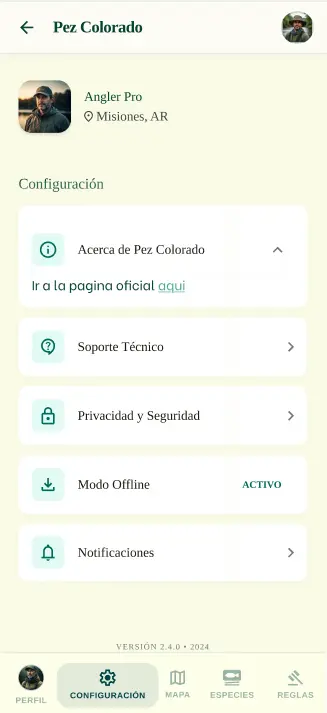

Pez Colorado
La aplicación de pesca misionera definitiva
El Problema
Quizá muchas aplicaciones de pesca tengan información importante sobre el área de misiones, pero carecen de muchas funciones vitales que consideramos que podrían ayudar de gran manera a los pescadores locales. Las aplicaciones de pesca suelen dar puntos de pesca, información sobre ciertas especies o un pequeño registro personal.
Nosotros pensamos en que podríamos dar mucho más que eso. Como solo nos limitaríamos a nuestra provincia de Misiones, podemos ir mucho más a fondo porque no se tienen en cuenta cosas como la legislación local, los cambios de veda, tiendas que puedan vender mercancía útil para los compradores o lugares donde hospedarse. Queremos ofrecer eso además de solo puntos de pesca.
Mi Rol en el Equipo
Con nuestro equipo nos hemos dividido constantemente las tareas por lo cual tuve más de un rol. Mientras que ciertos compañeros se encargaron más de tareas artísticas o de diseño, yo ayudé mucho con el lado de la investigación y planteamiento conceptual de nuestra aplicación.
Investigué cosas como competidores directos, el posible mercado de la aplicación, y planteé por qué usamos el diseño, los colores y la tipografía que finalmente elegimos. Esto se sumó a muchas tareas que realizamos todos por separado, como la creación de las proto-personas o el diagrama de flujo de usuario. Posteriormente también colaboré con el diseño de la interfaz y la funcionalidad de la enciclopedia de especies y la configuración de usuario.
Proceso de Diseño e Investigación
Lo primero que hicimos fue definir dónde nos encontrábamos: necesitábamos contexto. Necesitábamos entender si había algún servicio similar en Misiones, si el proyecto podía existir y ser sustentable, quiénes eran los competidores directos para usarlos como referencia y qué problemáticas de usabilidad podíamos encontrarnos.
Aprendí en gran medida que lo que más se valora en este rubro es la accesibilidad y sencillez. La pesca tiene un público demográfico sumamente variado y muchas personas no están dispuestas a "saltar de página en página" en su celular; necesitan algo rápido y simple de manejar. En base a eso, diseñamos proto-personas detalladas para guiar nuestras decisiones de desarrollo.
Ideación y Ajustes del Prototipo
El proyecto mantuvo su idea principal, pero la propuesta visual cambió sustancialmente. Inicialmente lo planeamos con tonos grises y azules, pero gradualmente comprendimos que los tonos verdes conectaban de forma directa con la selva misionera y la naturaleza del deporte en la región.
El Pivot de Usabilidad en el Testeo
Al probar el primer prototipo con un agente externo al desarrollo, nos dimos cuenta de que la navegación resultaba ortopédica y confusa. Tomé la decisión de modificar drásticamente el diseño: eliminamos bloques repetitivos que abrumaban la vista, agregamos atajos inteligentes en pantalla para ahorrar pasos y agrandamos considerablemente las fotografías de las especies de peces dentro de la enciclopedia para facilitar su rápido reconocimiento en el río.
Interfaces del Prototipo
A continuación se detallan algunas de las pantallas principales del prototipo móvil iterado, enfocadas en la legibilidad en exteriores y la rápida navegación.

Buscador de Peces
Filtros rápidos y enciclopedia local.

Perfil Detallado
Información de veda, morfología y carnadas.

Panel de Configuración
Preferencias del pescador y mapas offline.

Privacidad y Seguridad
Control de datos de ubicación y reportes.
Solución Obtenida
Hoy en día contamos con un prototipo funcional de aplicación móvil sumamente accesible, muy simplificada y que proporciona un servicio indispensable y centralizado que simplemente no es común encontrar para los pescadores del territory misionero.